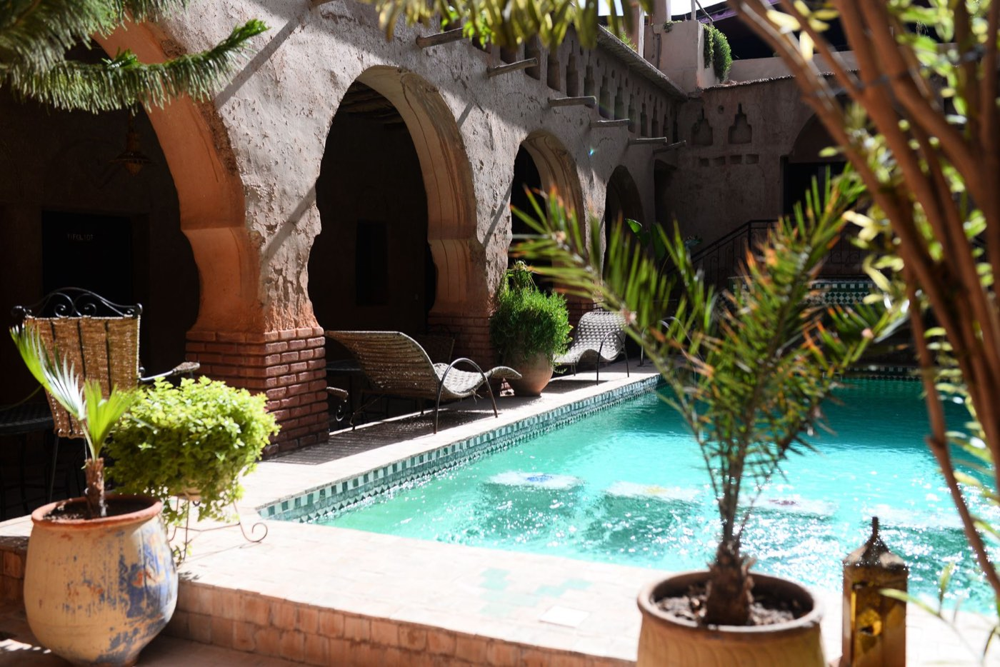

Séjour privé
Marrakech privé
Grande villa privée de luxe, un guide pour la médina, les jardins et les souks, et du temps pour vous.

Quelques jours dans la ville ocre.
Marrakech se suffit à elle-même pour un long week-end ou une semaine : la place Jemaa el-Fna à la tombée de la nuit, les souks, la médersa Ben Youssef, le palais de la Bahia, le jardin Majorelle, et des terrasses pour regarder la ville vivre.
Nous l'organisons autour d'un hébergement qui compte autant que les visites : riad dans la médina, hôtel dans l'Hivernage ou la Palmeraie, ou grande villa privée avec piscine pour une famille ou un groupe d'amis. Un guide vous accompagne les premiers jours, puis la ville est à vous.
Pour qui ? Pour une escapade courte, un anniversaire, un week-end prolongé ou une base avant l'Atlas ou la côte.

Grande villa privée de luxe, un guide pour la médina, les jardins et les souks, et du temps pour vous.

Casablanca, Rabat, Meknès, Volubilis, Fès et Marrakech, avec guide et transferts privés.
Dites-nous vos dates et vos envies, Sandra vous répond sous 24 h.